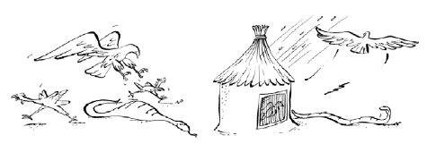
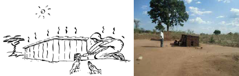
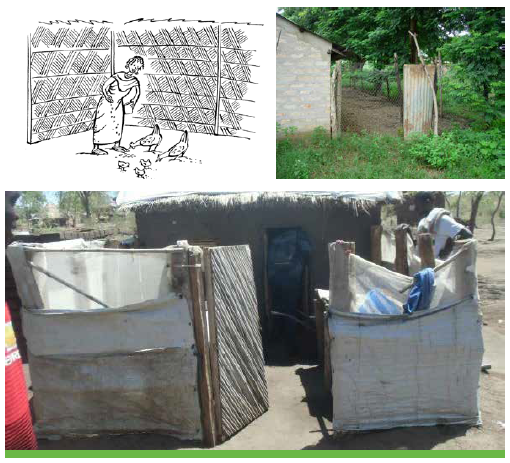
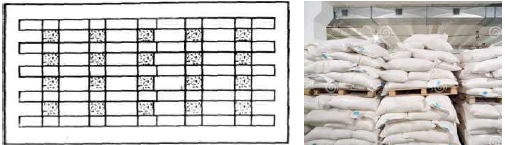

ហេតុអ្វីបានជាសត្វបក្សីគួរមានផ្ទះ ឬជម្រក?
លំនៅដ្ឋានគឺចាំបាច់ដើម្បីការពារមាន់ប្រឆាំងនឹង * មំសាសី (ដូចជាពស់ ឥន្ទ្រី និងសត្វព្រៃ)។ កូនមាន់គឺជាអ្នករងគ្រោះបំផុត * ចោរ * អាកាសធាតុអាក្រក់ (ភ្លៀង ព្រះអាទិត្យ ខ្យល់ត្រជាក់ខ្លាំង សីតុណ្ហភាពពេលយប់ធ្លាក់ចុះ) (រូបភាពទី 4) និង * ដើម្បីផ្តល់ជម្រកសម្រាប់ពងមាន់ និងមេមាន់។
ផ្ទះបសុបក្សីដែលសមរម្យ ឬមានផាសុកភាពក៏មានសារៈសំខាន់ផងដែរសម្រាប់ផលិតកម្មប្រកបដោយប្រសិទ្ធភាព និងភាពងាយស្រួលរបស់អ្នកចិញ្ចឹមមាន់

មូលហេតុចម្បងនៃការស្លាប់ ឬបាត់បង់មាន់ក្នុងស្រុកមានដូចជា៖ * ជំងឺ * អាកាសធាតុអាក្រក់ * មំសាសី * គ្រោះថ្នាក់ * ចោរ។
ផ្ទះរួមចំណែកយ៉ាងខ្លាំងក្នុងការគ្រប់គ្រងមូលហេតុនៃការស្លាប់ទាំងនេះ ដូច្នេះយើងទទួលបានមាន់កាន់តែច្រើនដែលអាចរស់បានសម្រាប់អាហារ និងប្រាក់ចំណូល។
ការជ្រើសរើសគេហទំព័រត្រឹមត្រូវ។
នៅពេលជ្រើសរើសគេហទំព័រត្រឹមត្រូវអ្នកគួរតែពិចារណា
- កន្លែងមានម្លប់ ដើម្បីរក្សាផ្ទះឱ្យត្រជាក់។ ដើមឈើខ្ពស់នៅជិតផ្ទះផ្តល់ម្លប់ ហើយមានប្រយោជន៍។ ដើមឈើបម្រើជាខ្យល់បក់ និងសម្រាប់ម្លប់នៅរដូវប្រាំង។ គុណវិបត្តិគឺថាវាអនុញ្ញាតឱ្យសត្វមំសាសីហោះហើរនៅក្បែរនោះ។
- កន្លែងលើកស្ងួតជាមួយដីរាបស្មើ ដើម្បីរក្សាកំរាលឥដ្ឋឱ្យស្ងួតក្នុងរដូវវស្សា។
- ចង់បានដីដែលមានទឹកស្អាត។ កុំសង់ផ្ទះនៅក្នុងវាលភក់ ឬកន្លែងដែលទឹកភ្លៀងអាចចូលផ្ទះបាន។ ទឹកនៅក្នុងទ្រុងមាន់បង្កឱ្យបញ្ចេញឧស្ម័នពុល ហៅថា អាម៉ូញាក់ និងមេរោគលូតលាស់
- បោសសំអាតស្មៅ និងគុម្ពឈើប្រហែល 3 ម៉ែត្រនៅសងខាងផ្ទះ ដើម្បីកុំឱ្យសត្វពស់ និងកណ្តុរនៅឆ្ងាយពីសត្វមាន់របស់អ្នក។
- សង់ផ្ទះមាន់ក្បែរផ្ទះមនុស្ស ដើម្បីសុវត្ថិភាព អ្នកត្រូវតែអាចស្តាប់ថាតើសត្វមាន់រំខាននៅពេលយប់ដោយសត្វមំសាសី ឬចោរដែលចង់លួចសត្វស្លាប។
- ផ្ទះគួរតែត្រូវបានសាងសង់តាមរបៀបដែលកាំរស្មីព្រះអាទិត្យដោយផ្ទាល់មិនចូលក្នុងផ្ទះ។ នេះមានសារៈសំខាន់សម្រាប់កូនមាន់ ដែលកូនមាន់ក្នុងស្រុកនឹងស្នាក់នៅក្នុងផ្ទះប្រហែល 2 ខែមុនពេលចេញទៅក្រៅ។ នេះគេហៅថា ទិសខាងកើតទៅលិចនៃទ្រុងមាន់រាងចតុកោណ។ កាំរស្មីព្រះអាទិត្យដោយផ្ទាល់លើកកម្ពស់ការលេងហួសហេតុ ហើយដូច្នេះបរិយាកាសធូលីពីការទុកដាក់សំរាមនាំឱ្យទៅជាជំងឺផ្លូវដង្ហើម។ រូបភាពទី 5 និងទី 6 បង្ហាញពីផ្ទះមាន់មិនល្អ និងសាងសង់បានល្អ។

មាន់រត់
- ការរត់គឺជាកន្លែងរុំព័ទ្ធជុំវិញផ្ទះមាន់ដែលអនុញ្ញាតឱ្យមាន់ស្នាក់នៅពេលនៅខាងក្រៅផ្ទះ។
- តំបន់ដែលហ៊ុមព័ទ្ធក៏ត្រូវបានប្រើប្រាស់សម្រាប់ការផ្តល់ចំណី ការស្រោចទឹក ការសង្កេតហ្វូងសត្វ និងការប្រមូលពង (រូបភាពទី 8) ។
- ជញ្ជាំងដែលមានកំពស់ 1.5 - 2 ម៉ែត្រធ្វើពីដីឥដ្ឋឬក្រណាត់ត្បាញអាចត្រូវបានប្រើប្រាស់សម្រាប់សាងសង់របង។ 17 សៀវភៅណែនាំបច្ចេកទេសសម្រាប់ការកែលម្អបសុបក្សីក្នុងស្រុកដោយប្រើវិធីសាស្ត្រគ្រប់គ្រងការភ្ញាស់តាមកម្មវិធី - គម្រោង PAMANA
- ការរត់មាន់មានតម្លៃថ្លៃ ប៉ុន្តែអាចផ្តល់នូវសុវត្ថិភាពដល់កសិករ និងជាឱកាសល្អដើម្បីសង្កេតមើលឥរិយាបថរបស់បក្សី និងស្វែងរកបញ្ហាដែលអាចកើតមាន។
- ទោះជាយ៉ាងណាក៏ដោយ វាមានសារៈសំខាន់ណាស់ដែលសត្វស្លាបពេញវ័យត្រូវទុកចោលនៅខាងក្រៅនៅពេលថ្ងៃ ដើម្បីរក្សាតម្លៃចំណីទាប។

ជម្រកសម្រាប់មេមាន់ និងកូនមាន់
- បន្ទាប់ពីញាស់រួចហើយ មេមាន់ និងកូនមាន់ត្រូវនៅជិតគ្នាក្នុងទ្រុង ឬបន្ទប់ដាច់ដោយឡែក។
- ដំណោះស្រាយសាមញ្ញបំផុតគឺត្រូវប្រើកន្ត្រក (រូបភាពទី 9) ។ ជម្រកបែបនេះគួរតែការពារជាចម្បងប្រឆាំងនឹងបក្សីពេញវ័យដែលប្រកួតប្រជែងគ្នាដើម្បីចំណី និងប្រឆាំងនឹងសត្វមំសាសី ហើយវាគួរតែផ្តល់នូវបរិយាកាសស្ថិរភាព ជំរកពីព្រះអាទិត្យ ភ្លៀង និងខ្យល់។
Brooder
- មេមាន់គឺជាផ្ទះសម្រាប់ចិញ្ចឹមកូនមាន់រហូតដល់ 8 សប្តាហ៍នៃជីវិត។
- កូនមាន់ត្រូវបានគេបង្កើតឡើងដើម្បីរក្សាផ្ទះឱ្យមានភាពកក់ក្តៅសម្រាប់កូនមាន់រស់នៅដោយផាសុកភាព។ វាមិនគួរត្រជាក់ខ្លាំងទេ ហើយគួរបិទជិតឱ្យបានត្រឹមត្រូវ ដើម្បីកុំឱ្យមានខ្យល់ត្រជាក់ ។ វាក៏មិនគួរអនុញ្ញាតឱ្យមានកំដៅខ្លាំងពេកដើម្បីបង្កើតនៅខាងក្នុងដែរ។
- វាមានខ្យល់ចេញចូលគ្រប់គ្រាន់ ពោលគឺ បង្អួច និងបំពង់ខ្យល់អាចបើក ឬបិទបាននៅពេលចាំបាច់ ចំណាំ៖ កូនមាន់តូចៗងាយរងគ្រោះនឹងជំងឺផ្តាសាយ ការខ្សោះជាតិទឹក ការអត់ឃ្លាន និងជំងឺនានា ដូច្នេះគួរប្រុងប្រយ័ត្នដើម្បីជៀសវាងបញ្ហាទាំងនេះ។
ផ្ទះចិញ្ចឹម
- នេះជាផ្ទះដែលប្រើសម្រាប់ចិញ្ចឹមសត្វស្លាប ក្រោយពីទុកកូនរហូតដល់ចាស់។
- ផ្ទះបែបនេះមានសារៈសំខាន់នៅក្នុងកន្លែងដូចជាជំរុំ ដែលមានទំហំដីតូច ហើយមាន់ត្រូវរក្សាទុកក្នុងផ្ទះ ដើម្បីកាត់បន្ថយការលួច និងជម្លោះ។
- ផ្ទះគួរតែមានខ្យល់ចេញចូលគ្រប់គ្រាន់ដោយសាងសង់ជញ្ជាំងខ្លី (កម្ពស់ប្រហែល 0.5 ម៉ែត្រ) និងកម្ពស់ដែលនៅសល់ធ្វើពីសំណាញ់លួស ឬដើមត្រែង។
សំរាម
- សម្ភារផ្សេងៗដែលប្រើជាសំរាមរួមមាន (រូបភាពទី១៣)៖
- សំបកកាហ្វេ,
- កោរសក់ / ឃើញធូលីឈើ,
- អង្កាម,
- គ្រាប់ដីកិនកម្ទេចចោល និង
- ដើមពោត / sorghum កាត់ក្នុងចំណោមរបស់ផ្សេងទៀត។
- កម្រាលឥដ្ឋគួរត្រូវបានគ្របដណ្ដប់ដោយកំរាស់យ៉ាងហោចណាស់ 3 អ៊ីញ។
- ការទុកដាក់សំរាមមិនគួរមានផ្សិតទេ។ វាគួរតែត្រូវបានរក្សាឱ្យស្ងួត និងអាចបត់បែនបានដោយជំនួសផ្នែកសើម និង raking ជារៀងរាល់ថ្ងៃ។
ការគ្រប់គ្រងផ្ទះបសុបក្សី
គោលការណ៍គ្រឹះគឺរក្សាផ្ទះឱ្យមានរបៀបរៀបរយ ស្អាត និងសុវត្ថិភាពសម្រាប់សត្វស្លាប។ ការអនុវត្តការគ្រប់គ្រងរួមមានៈ * សំអាតតំបន់ជុំវិញផ្ទះបសុបក្សី * យកសត្វស្លាបងាប់ដែលរកឃើញនៅក្នុងផ្ទះ កប់ ឬដុតភ្លាមៗ។ ពួកគេមិនគួរបោះចោលក្នុងរណ្តៅសំរាមទេ។ * រក្សាភ្ញៀវដែលមិនចាំបាច់នៅឆ្ងាយពីអង្គភាពបសុបក្សី។ * អនុវត្តការជួសជុលផ្ទះជាប្រចាំ តាមការរំលោះកំណត់តាមពេលវេលា។ * ការហ៊ុមព័ទ្ធផ្ទះបសុបក្សីដោយប្រើប្រាស់សម្ភារៈដូចជា ដើមឈើធម្មជាតិ សំណាញ់លួស ឬរបងប្រពៃណីពីឈើ និងដើមត្រែង តាមលទ្ធភាពដែលអាចធ្វើទៅបាន។
ហាង (សម្រាប់ចំណី ស៊ុត និងឧបករណ៍)
- នេះក៏អាចជាផ្ទះ (ឬបន្ទប់) សម្រាប់រក្សាទុកការប្រមូលផលកសិកម្ម។
- កន្លែងដាក់ចំណីគួរតែជាបន្ទប់ ឬផ្ទះដែលមិនលេចធ្លាយ និងកាត់បន្ថយការចូលរបស់សត្វកណ្តុរ។
- ជញ្ជាំងគួរតែត្រូវបានគេលាប និងបញ្ចប់ដោយស្រទាប់ស៊ីម៉ងត៍រអិល (ឬសម្ភារៈរអិលណាមួយ) ដើម្បីជៀសវាងសត្វកកេរពីការឡើងភ្នំ និងប៉ារ៉ាស៊ីតដែលលាក់ខ្លួននៅក្នុងពួកគេ។
- ទ្វារក៏គួរត្រូវបានបំពាក់យ៉ាងរឹងមាំផងដែរ។
- ហាងគួរតែមានបន្ទះក្តារបន្ទះ ឬរចនាសម្ព័ន្ធលើកដែលដាក់ធុងដាក់ចំណី/ស៊ុត ដើម្បីជៀសវាងការប៉ះនឹងកម្រាលឥដ្ឋ (សូមមើលរូបភាពទី 14)។ បាវអាហារគួរត្រូវបានខ្ចប់ជាជង់ដោយមានចន្លោះរវាងវាសម្រាប់ចរាចរខ្យល់។
- អ្នកគួរតែជៀសវាងការប្រើប្រាស់ថ្នាំពុលកណ្តុរនៅក្នុងហាងជានិច្ច ព្រោះវាអាចបំពុលចំណីបាន។ រមណីយដ្ឋានទៅអន្ទាក់ឬឆ្មា។

Sickbay / បន្ទប់ដាច់ដោយឡែក
- មានផ្ទះដាច់ដោយឡែកមួយដែលមាន់ឈឺអាចនៅដាច់ដោយឡែក និងព្យាបាលបាន។ អ្នកក៏អាចមានបន្ទប់ដាច់ដោយឡែកមួយ ដើម្បីដាក់ឱ្យនៅដាច់ពីគេនូវសត្វមាន់ថ្មីដែលនាំមកពីកសិដ្ឋានមួយផ្សេងទៀតទៅកាន់ផ្ទះរបស់អ្នក។
- នៅកន្លែងឈឺ អ្នករក្សាសត្វស្លាបដែលអ្នកសង្ស័យថាឈឺ មិនបានផលិត និងរងរបួស ឧទាហរណ៍ដោយចៃដន្យ ឬសត្វព្រៃ។ ជួនកាលអ្នកជំងឺអាចត្រូវបានរក្សាទុកនៅក្នុងអង្គភាពដាច់ដោយឡែក ឬកន្លែងឈឺពីកន្លែងដែលពួកគេអាចត្រូវបានគេមើលយ៉ាងជិតស្និទ្ធ និងព្យាបាល ឬសម្លាប់ក្នុងករណីមានជំងឺឆ្លង។
- សត្វស្លាបដែលឈឺខ្លាំង គួរតែត្រូវបានគេបោះចោល ព្រោះវាអាចនឹងមិនអាចទទួលបានលទ្ធភាពផលិតឡើងវិញដល់កម្រិតអតិបរមា។